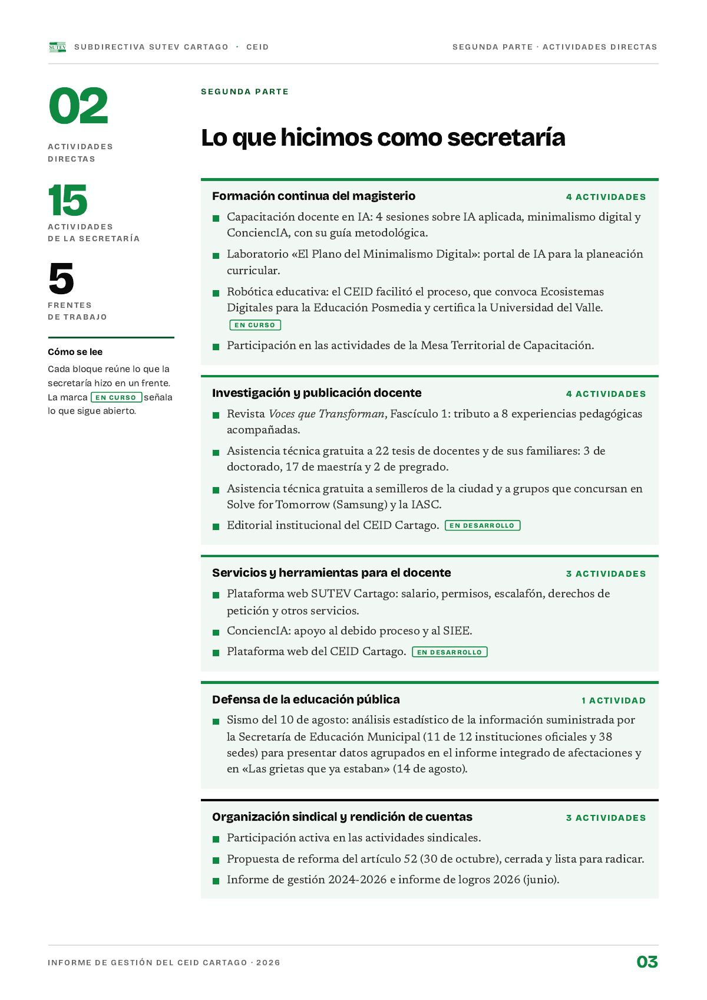

Segunda parte
Lo que hicimos como secretaría
Quince actividades directas en cinco frentes: formación, investigación y publicación, servicios al docente, defensa de la educación pública y organización sindical.
PDF · 1 pág. · 153 KBCada bloque reúne lo que la secretaría hizo en un frente. Lo que sigue abierto lleva su estado entre paréntesis.
Formación continua del magisterio4
Investigación y publicación docente4
Servicios y herramientas para el docente3
Organización sindical y rendición de cuentas3
Defensa de la educación pública1
Fuente: Informe de gestión 2026, segunda parte (15 actividades).
Formación continua del magisterio
- Capacitación docente en IA: 4 sesiones sobre IA aplicada, minimalismo digital y ConciencIA, con su guía metodológica.
- Laboratorio «El Plano del Minimalismo Digital»: portal de IA para la planeación curricular.
- Robótica educativa: el CEID facilitó el proceso, que convoca Ecosistemas Digitales para la Educación Posmedia y certifica la Universidad del Valle (en curso).
- Participación en las actividades de la Mesa Territorial de Capacitación.
Investigación y publicación docente
- Revista Voces que Transforman, fascículo 1: tributo a 8 experiencias pedagógicas acompañadas.
- Asistencia técnica gratuita a 22 tesis de docentes y de sus familiares: 3 de doctorado, 17 de maestría y 2 de pregrado.
- Asistencia técnica gratuita a semilleros de la ciudad y a grupos que concursan en Solve for Tomorrow (Samsung) y la IASC.
- Editorial institucional del CEID Cartago (en desarrollo).
3Doctorado
17Maestría
2Pregrado
Fuente: Informe de gestión 2026, segunda parte.
Servicios y herramientas para el docente
- Plataforma web SUTEV Cartago: salario, permisos, escalafón, derechos de petición y otros servicios.
- ConciencIA: apoyo al debido proceso y al SIEE.
- Plataforma web del CEID Cartago (en desarrollo).
Defensa de la educación pública
- Sismo del 10 de agosto: análisis estadístico de la información suministrada por la Secretaría de Educación Municipal (11 de 12 instituciones oficiales y 38 sedes) para presentar datos agrupados en el informe integrado de afectaciones y en «Las grietas que ya estaban» (14 de agosto).
Instituciones oficiales de Cartago11 de 12
Fuente: Informe de gestión 2026, segunda parte.
Organización sindical y rendición de cuentas
- Participación activa en las actividades sindicales.
- Propuesta de reforma del artículo 52 (30 de octubre), cerrada y lista para radicar.
- Informe de gestión 2024-2026 e informe de logros 2026 (junio).
Así se ve en el informe
1 página